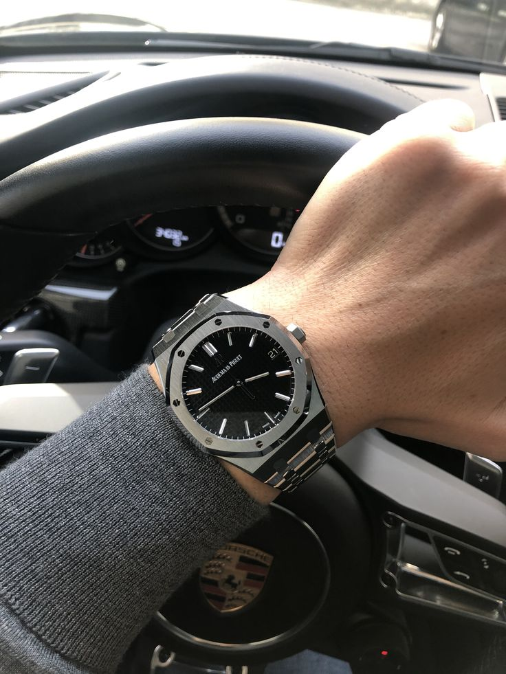
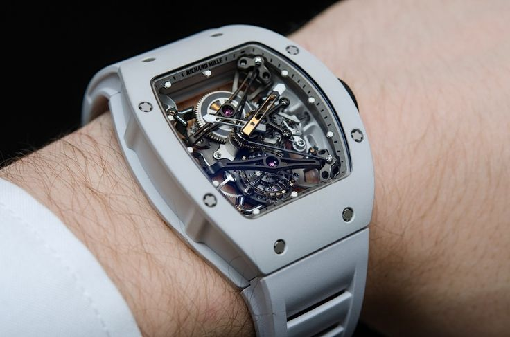
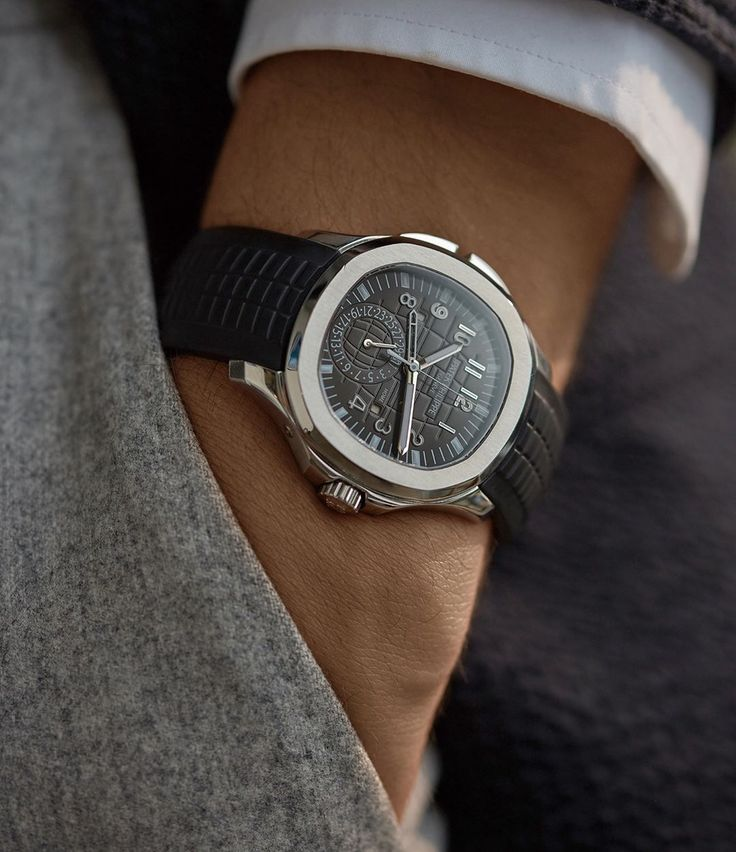
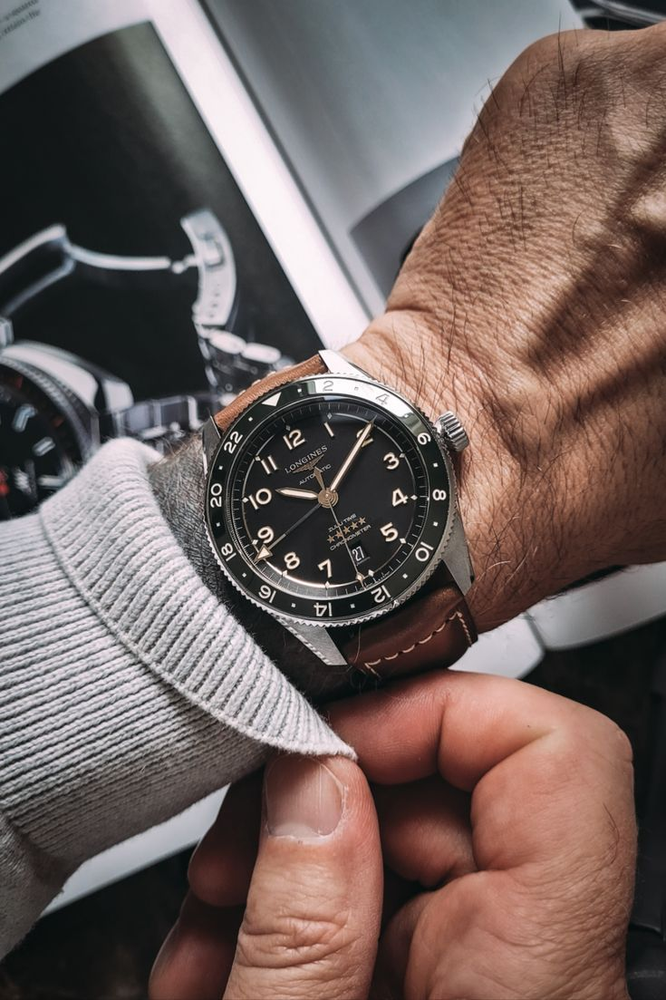
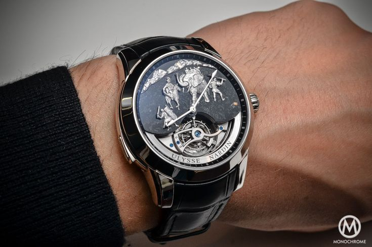

In the heart of timeless precision, behold,
Audemars Piguet's craftsmanship, pure gold.
In whispers of gears, an orchestral delight,
Each tick an ode to mastery, day and night.
With every flicker, a moment held still,
Echoing legacies, as time's hands fulfill.
A dance of ingenuity, in every fine part,
A symphony of elegance, etched in the heart.
From Vallée de Joux, where dreams take flight,
Audemars Piguet's legacy shines bright.
A tale of horology, written in grace,
Whispered by time, in every embrace.
In the realm where dreams meet precision's gaze,
Richard Mille's symphony, a marvel ablaze.
Each tick a testament, each second a tale,
Crafted in wonders, where time and art prevail.
In whispers of carbon and curves, behold,
Innovations unfurl, as stories are told.
A fusion of technology and refined grace,
Richard Mille's legacy, in time's embrace.
With each intricate detail, a journey untold,
A saga of resilience, in horology's hold.
In the heart of each creation, passion so rife,
Richard Mille's tale, an ode to life.
In the hush of timeless elegance, grace aligns,
Patek Philippe's legacy, where brilliance entwines.
With each beat, a whisper of history untold,
Where moments transcend, and stories unfold.
Through the rhythm of artistry, each second soars,
Patek Philippe's symphony, an opus that endures.
With each dial's caress, a tale finds its flight,
An emblem of tradition, in time's gentle light.
In Vallée de Joux's embrace, a legacy unfurled,
Patek Philippe's tale, an eternal world.
In the heart of horology, a bond so rare,
Patek Philippe's essence, beyond compare.
In the breath of timeless tales, history unfolds,
Rolex's journey, a saga of brilliance it holds.
With each heartbeat, a testament to time's might,
Each second an echo of horological might.
In the symphony of precision, where dreams align,
Rolex's elegance, an eternal design.
With each tick, a whisper of moments untold,
A legacy engraved in the spirit of bold.
In the heart of Swiss craft, where visions aspire,
Rolex's narrative, an emblem of desire.
In the tapestry of time, a story to behold,
Rolex's resonance, an eternal gold.
In the whispers of time's tender embrace,
Longines' tale, an elegance interlaced.
With each rhythm, a melody softly plays,
A journey unfurling, in time's gentle gaze.
In the cradle of tradition, where dreams take flight,
Longines' legacy, an emblem of light.
With each timeless stroke, a history unfolds,
A symphony of grace, in horology's hold.
Amidst Swiss valleys, where echoes resound,
Longines' heritage, in every heartbeat found.
In the tapestry of hours, a story behold,
Longines' essence, an eternal gold.
Amidst the whispers of the sea's timeless sway,
Ulysse Nardin's tale, an odyssey at play.
With each ripple, a journey through tides untold,
A symphony of time, in the depths of bold.
In the heart of precision, where visions unite,
Ulysse Nardin's compass, a guiding light.
With each tick, a sonnet of craftsmanship prevails,
A testament to excellence, where every detail sails.
In the embrace of the ocean's vast embrace,
Ulysse Nardin's legend, a horizon to chase.
With every tide's turn, a story to enfold,
Ulysse Nardin's spirit, an eternal mold.
Sometimes five Imprimaturs are seen together dialogue-wise in the
piazza of one title-page, complimenting and ducking each to other
with their shaven reverences, whether the author, who stands by in
perplexity at the foot of his epistle, shall to the press or to
the sponge.
These are the pretty responsories, these are the dear antiphonies,
that so bewitched of late our prelates and their chaplains with
the goodly echo they made; and besotted us to the gay imitation of
a lordly Imprimatur, one from Lambeth House, another from the west
end of Paul's; so apishly Romanizing, that the word of command
still was set down in Latin; as if the learned grammatical pen
that wrote it would cast no ink without Latin; or perhaps, as they
thought, because no vulgar tongue was worthy to express the pure
conceit of an Imprimatur, but rather, as I hope, for that our
English, the language of men ever famous and foremost in the
achievements of liberty, will not easily find servile letters enow
to spell such a dictatory presumption English.

And thus ye have the inventors and the original of book-licensing
ripped up and drawn as lineally as any pedigree. We have it not,
that can be heard of, from any ancient state, or polity or church;
nor by any statute left us by our ancestors elder or later; nor
from the modern custom of any reformed city or church abroad, but
from the most anti-christian council and the most tyrannous
inquisition that ever inquired.
Till then books were ever as freely admitted into the world as any
other birth; the issue of the brain was no more stifled than the
issue of the womb: no envious Juno sat cross-legged over the
nativity of any man's intellectual offspring; but if it proved a
monster, who denies, but that it was justly burnt, or sunk into
the sea?
But that a book, in worse condition than a peccant soul, should be
to stand before a jury ere it be born to the world, and undergo
yet in darkness the judgment of Radamanth and his colleagues, ere
it can pass the ferry backward into light, was never heard before,
till that mysterious iniquity, provoked and troubled at the first
entrance of Reformation, sought out new limbos and new hells
wherein they might include our books also within the number of
their damned. And this was the rare morsel so officiously snatched
up, and so ill-favouredly imitated by our inquisiturient bishops,
and the attendant minorites their chaplains. That ye like not now
these most certain authors of this licensing order, and that all
sinister intention was far distant from your thoughts, when ye
were importuned the passing it, all men who know the integrity of
your actions, and how ye honour truth, will clear ye readily.
RichardMiller
Sometimes five Imprimaturs are seen together dialogue-wise in the
piazza of one title-page, complimenting and ducking each to other
with their shaven reverences, whether the author, who stands by in
perplexity at the foot of his epistle, shall to the press or to
the sponge. These are the pretty responsories, these are the dear
antiphonies, that so bewitched of late our prelates and their
chaplains with the goodly echo they made; and besotted us to the
gay imitation of a lordly Imprimatur, one from Lambeth House,
another from the west end of Paul's.
So apishly Romanizing, that the word of command still was set down
in Latin; as if the learned grammatical pen that wrote it would
cast no ink without Latin; or perhaps, as they thought, because no
vulgar tongue was worthy to express the pure conceit of an
Imprimatur, but rather, as I hope, for that our English, the
language of men ever famous and foremost in the achievements of
liberty, will not easily find servile letters enow to spell such a
dictatory presumption English.

They are not skilful considerers of human things, who imagine to
remove sin by removing the matter of sin; for, besides that it is
a huge heap increasing under the very act of diminishing, though
some part of it may for a time be withdrawn from some persons, it
cannot from all, in such a universal thing as books are; and when
this is done, yet the sin remains entire. Though ye take from a
covetous man all his treasure, he has yet one jewel left, ye
cannot bereave him of his covetousness.
Banish all objects of lust, shut up all youth into the severest
discipline that can be exercised in any hermitage, ye cannot make
them chaste, that came not hither so; such great care and wisdom
is required to the right managing of this point. Suppose we could
expel sin by this means; look how much we thus expel of sin, so
much we expel of virtue: for the matter of them both is the same;
remove that, and ye remove them both alike.
PatekPhilipe
Sometimes five Imprimaturs are seen together dialogue-wise in the
piazza of one title-page, complimenting and ducking each to other
with their shaven reverences, whether the author, who stands by in
perplexity at the foot of his epistle, shall to the press or to
the sponge. These are the pretty responsories, these are the dear
antiphonies, that so bewitched of late our prelates and their
chaplains with the goodly echo they made.
And besotted us to the gay imitation of a lordly Imprimatur, one
from Lambeth House, another from the west end of Paul's; so
apishly Romanizing, that the word of command still was set down in
Latin; as if the learned grammatical pen that wrote it would cast
no ink without Latin; or perhaps, as they thought, because no
vulgar tongue was worthy to express the pure conceit of an
Imprimatur, but rather, as I hope, for that our English, the
language of men ever famous and foremost in the achievements of
liberty, will not easily find servile letters enow to spell such a
dictatory presumption English.

Nay, which is more lamentable, if the work of any deceased author,
though never so famous in his lifetime and even to this day, come
to their hands for licence to be printed, or reprinted, if there
be found in his book one sentence of a venturous edge, uttered in
the height of zeal (and who knows whether it might not be the
dictate of a divine spirit?).
Yet not suiting with every low decrepit humour of their own,
though it were Knox himself, the reformer of a kingdom, that spake
it, they will not pardon him their dash: the sense of that great
man shall to all posterity be lost, for the fearfulness or the
presumptuous rashness of a perfunctory licenser. And to what an
author this violence hath been lately done, and in what book of
greatest consequence to be faithfully published, I could now
instance, but shall forbear till a more convenient season.
Rolex
Sometimes five Imprimaturs are seen together dialogue-wise in the
piazza of one title-page, complimenting and ducking each to other
with their shaven reverences, whether the author, who stands by in
perplexity at the foot of his epistle, shall to the press or to
the sponge. These are the pretty responsories, these are the dear
antiphonies, that so bewitched of late our prelates and their
chaplains with the goodly echo they made; and besotted us to the
gay imitation of a lordly Imprimatur, one from Lambeth House,
another from the west end of Paul's.
So apishly Romanizing, that the word of command still was set down
in Latin; as if the learned grammatical pen that wrote it would
cast no ink without Latin; or perhaps, as they thought, because no
vulgar tongue was worthy to express the pure conceit of an
Imprimatur, but rather, as I hope, for that our English, the
language of men ever famous and foremost in the achievements of
liberty, will not easily find servile letters enow to spell such a
dictatory presumption English.
And it is a particular disesteem of every knowing person alive,
and most injurious to the written labours and monuments of the
dead, so to me it seems an undervaluing and vilifying of the whole
nation. I cannot set so light by all the invention, the art, the
wit, the grave and solid judgment which is in England, as that it
can be comprehended in any twenty capacities how good soever, much
less that it should not pass except their superintendence be over
it, except it be sifted and strained with their strainers, that it
should be uncurrent without their manual stamp.
Truth and understanding are not such wares as to be monopolized
and traded in by tickets and statutes and standards. We must not
think to make a staple commodity of all the knowledge in the land,
to mark and licence it like our broadcloth and our woolpacks. What
is it but a servitude like that imposed by the Philistines, not to
be allowed the sharpening of our own axes and coulters, but we
must repair from all quarters to twenty licensing forges?
Had anyone written and divulged erroneous things and scandalous to
honest life, misusing and forfeiting the esteem had of his reason
among men, if after conviction this only censure were adjudged him
that he should never henceforth write but what were first examined
by an appointed officer, whose hand should be annexed to pass his
credit for him that now he might be safely read; it could not be
apprehended less than a disgraceful punishment. Whence to include
the whole nation, and those that never yet thus offended, under
such a diffident and suspectful prohibition, may plainly be
understood what a disparagement it is. So much the more, whenas
debtors and delinquents may walk abroad without a keeper, but
unoffensive books must not stir forth without a visible jailer in
their title.
Longines
Sometimes five Imprimaturs are seen together dialogue-wise in the
piazza of one title-page, complimenting and ducking each to other
with their shaven reverences, whether the author, who stands by in
perplexity at the foot of his epistle, shall to the press or to
the sponge. These are the pretty responsories, these are the dear
antiphonies, that so bewitched of late our prelates and their
chaplains with the goodly echo they made; and besotted us to the
gay imitation of a lordly Imprimatur, one from Lambeth House,
another from the west end of Paul's.
So apishly Romanizing, that the word of command still was set down
in Latin; as if the learned grammatical pen that wrote it would
cast no ink without Latin; or perhaps, as they thought, because no
vulgar tongue was worthy to express the pure conceit of an
Imprimatur, but rather, as I hope, for that our English, the
language of men ever famous and foremost in the achievements of
liberty, will not easily find servile letters enow to spell such a
dictatory presumption English.

And in conclusion it reflects to the disrepute of our ministers
also, of whose labours we should hope better, and of the
proficiency which their flock reaps by them, than that after all
this light of the Gospel which is, and is to be, and all this
continual preaching, they should still be frequented with such an
unprincipled, unedified and laic rabble, as that the whiff of
every new pamphlet should stagger them out of their catechism and
Christian walking.
This may have much reason to discourage the ministers when such a
low conceit is had of all their exhortations, and the benefiting
of their hearers, as that they are not thought fit to be turned
loose to three sheets of paper without a licenser; that all the
sermons, all the lectures preached, printed, vented in such
numbers, and such volumes, as have now well nigh made all other
books unsaleable, should not be armour enough against one single
Enchiridion, without the castle of St. Angelo of an Imprimatur.
UlysseNardin
Sometimes five Imprimaturs are seen together dialogue-wise in the
piazza of one title-page, complimenting and ducking each to other
with their shaven reverences, whether the author, who stands by in
perplexity at the foot of his epistle, shall to the press or to
the sponge. These are the pretty responsories, these are the dear
antiphonies, that so bewitched of late our prelates and their
chaplains with the goodly echo they made; and besotted us to the
gay imitation of a lordly Imprimatur, one from Lambeth House,
another from the west end of Paul's.
So apishly Romanizing, that the word of command still was set down
in Latin; as if the learned grammatical pen that wrote it would
cast no ink without Latin; or perhaps, as they thought, because no
vulgar tongue was worthy to express the pure conceit of an
Imprimatur, but rather, as I hope, for that our English, the
language of men ever famous and foremost in the achievements of
liberty, will not easily find servile letters enow to spell such a
dictatory presumption English.

Next, what more national corruption, for which England hears ill
abroad, than household gluttony: who shall be the rectors of our
daily rioting? And what shall be done to inhibit the multitudes
that frequent those houses where drunkenness is sold and
harboured? Our garments also should be referred to the licensing
of some more sober workmasters to see them cut into a less wanton
garb.
Who shall regulate all the mixed conversation of our youth, male
and female together, as is the fashion of this country? Who shall
still appoint what shall be discoursed, what presumed, and no
further? Lastly, who shall forbid and separate all idle resort,
all evil company? These things will be, and must be; but how they
shall be least hurtful, how least enticing, herein consists the
grave and governing wisdom of a state.